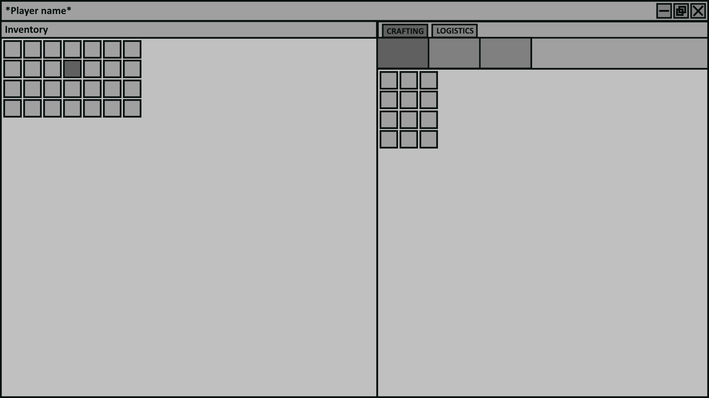
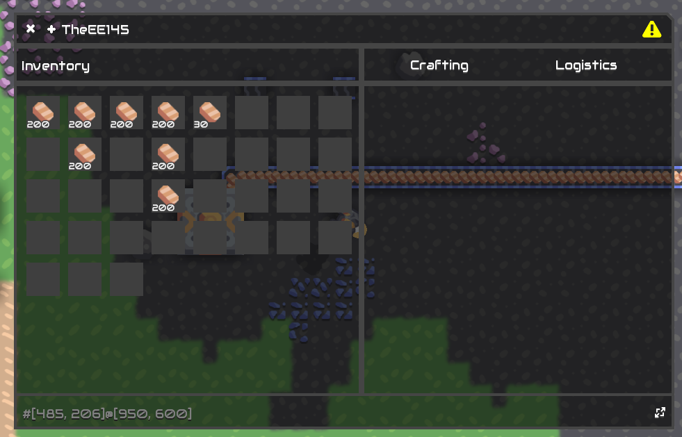
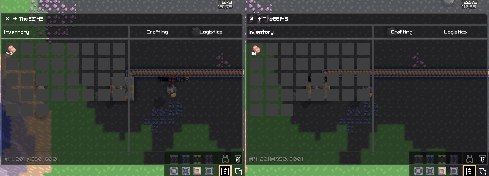

Hello! today this post will be about SE early multiplayer-supported inventory system
The inventory system will rework vanilla mechanics of building and cargo
I think the best idea to make this system is using window class because it's will be large
By default in inventory acceptable only 35 slots you can expand using tech or dark magic of addons
Unit that controlled by player now can't have cargo. All cargo will be removed and added to inventory
In future the building fragment in hud group will be hidden and never used because you need craft items by hand
The default size of items is 200!
The inventory stored in global variable if campaign and in unit otherwise
SE don't support campaign and multiplayer at the same time!
The multiplayer part of the system was hard but solution found: store data in unit as uuid, not for id
When player joins to the SE server, he's send package that contains JSON string of generated inventory
Player can change inventory using sync package that transfer JSON string of inventory to the server
The hardest part it's fix item cargo handler because it's faster than package sends
The solution is adding cooldown by 60 seconds and if you not host (headless/head) wait when SeItemDrop package will be processed
